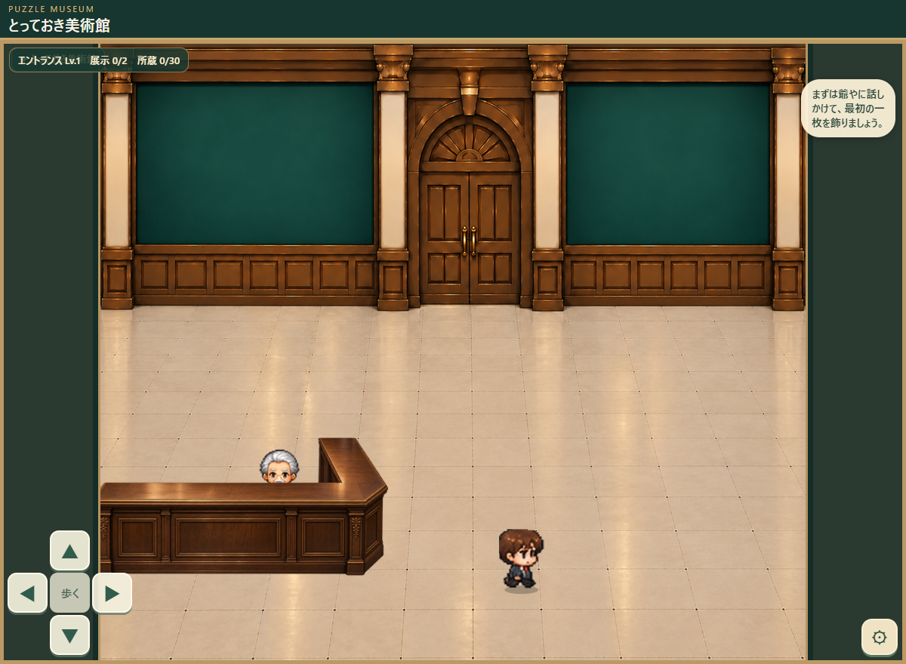
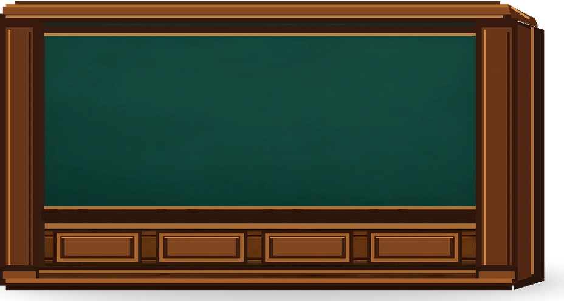
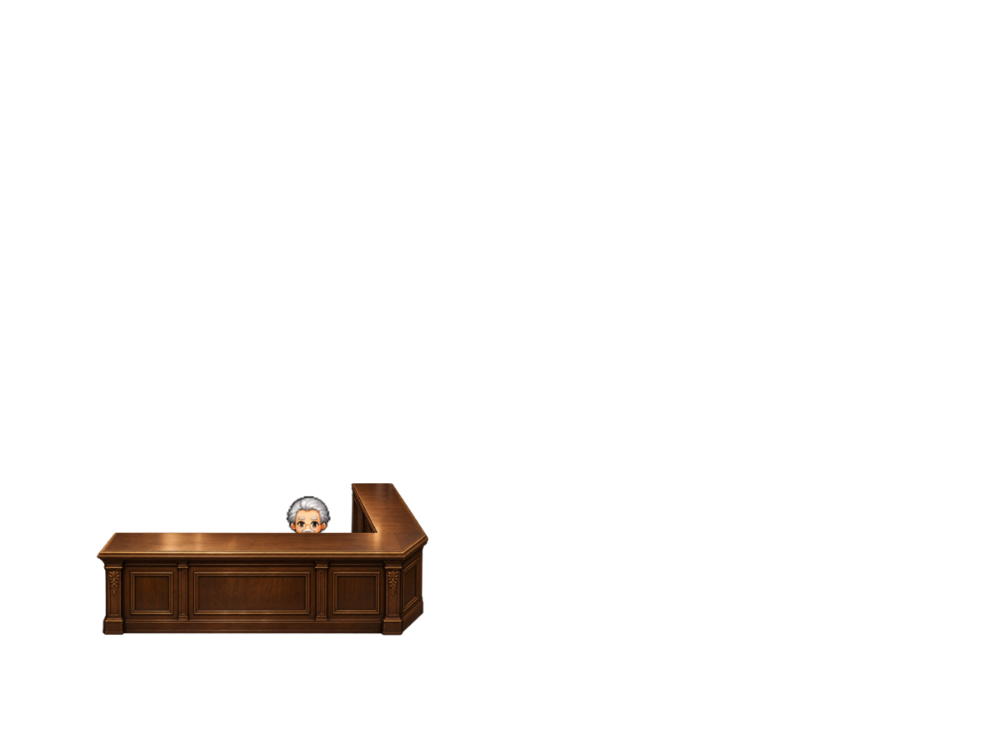

とっておき美術館｜受付奥の仕切り壁
配置調整プレビュー／カウンターは X=-10、Y=308、横幅233、高さ107 で固定



壁を指でドラッグすると移動できます。下の4つのスライダーでも調整可能。爺やとカウンターは前景として固定してあります。
前回の幅192・高さ132から、初期配置を 幅232・高さ124 に変更しています。ここでの変更は監修用プレビューにのみ反映されます。
仕切り壁だけの独立RGBA画像。写真・額縁・台紙は入れていません。横長候補（横幅232・高さ124に相当する比率）の透過素材です。さらに配置・寸法を決めた後、正式素材として調整します。
現在の扱い：カウンターは位置確定済み。仕切り壁は未承認で、移動と伸縮ができる仮配置です。背景を描き直していません。
※配置調整画面は、実ゲーム画面のスクリーンショット上で独立素材を合成するシミュレーションです。ゲームの実コードを操作・保存するものではありません。確定後にレイヤーと当たり判定も改修します。